Cuidado e Alimentação dos Slimes
Os Fundamentos de um Slime Feliz
O cuidado e a alimentação adequados são essenciais para manter seus slimes felizes, saudáveis e, o mais importante, produzindo Plorts valiosos. Cada espécie de slime tem preferências alimentares e comportamentos únicos.
Guia Visual de Alimentos
Saber o que dar de comer aos seus slimes é fundamental. Cada tipo de alimento — Fruta, Vegetal e Carne — é amado por diferentes slimes. Alimentar um slime com sua comida favorita dobrará sua produção de plorts!
🥕 Vegetais
Cenoura
Beterraba Coração
Cebola Bizarra
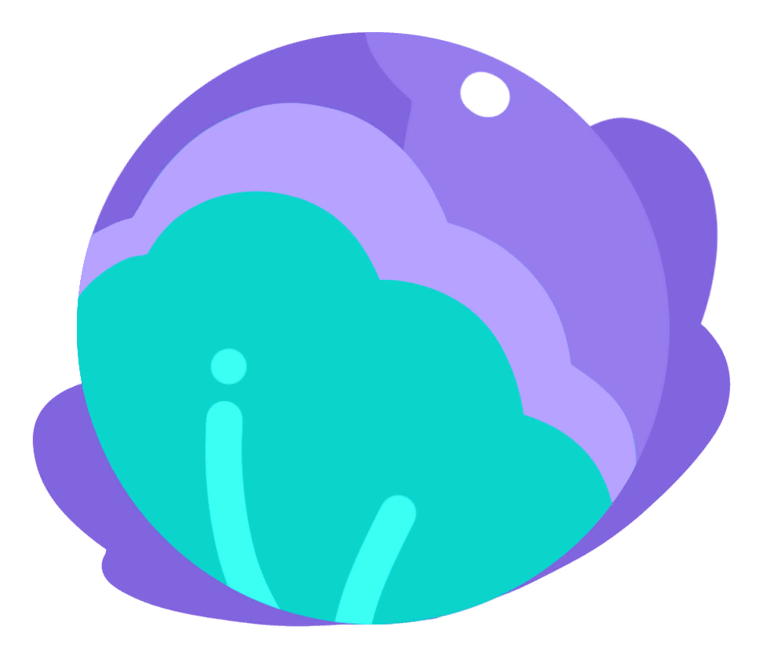
Alface d'Água
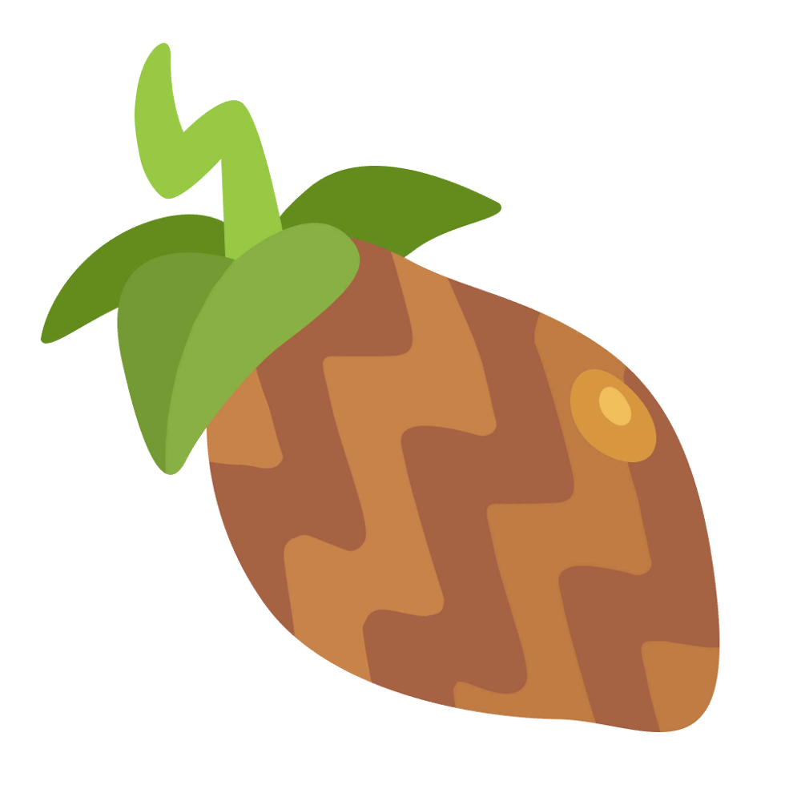
Batata Turbo
🍎 Frutas
Fruta Pogo
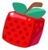
Cuborango
Manga Menta
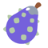
Pera de Espinho
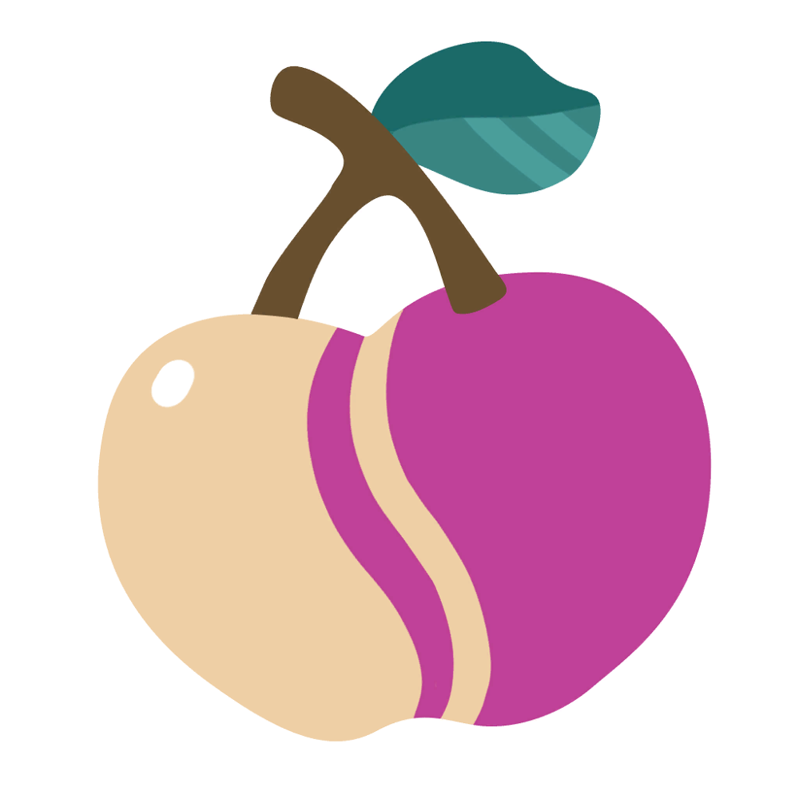
Cereja Polar
Roman Rocha
🍗 Carnes
Galinha
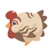
Galinha Pedregosa
Galinha de Confeito
Galinha da Roseira
Galinha Pintada
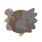
Galinha Anciã
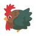
Galoso
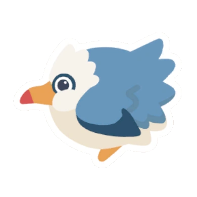
Galinha do mar
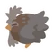
Galoso Ancião
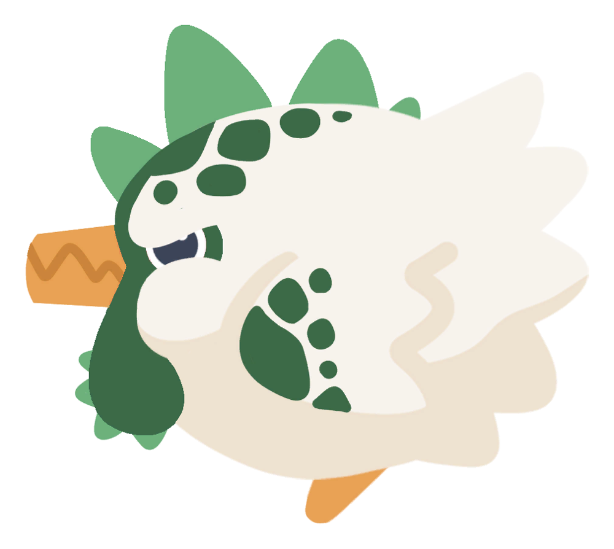
Galinha trovão
🍯 Néctar e Outros
Néctar Lunar
Água
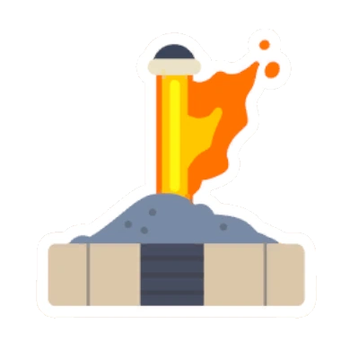
Cinzas
Entendendo as Dietas dos Slimes
- Tipos de Dieta: Slimes comem Frutas, Vegetais ou Carne. Slimes Rosas são especiais e comem de tudo! Slimes Panapanã comem exclusivamente Néctar.
- Comidas Favoritas: Todo slime (exceto o Rosa) tem uma comida favorita. Alimentá-los com sua favorita fará com que produzam o dobro de Plorts! Por exemplo, Slimes Tigrados comem carne, mas sua comida favorita é a Galinha Pedregosa.
- Mantendo os Slimes Alimentados: Um slime faminto é um slime agitado. Eles pularão mais alto e tentarão escapar. Um alimentador automático é uma ótima melhoria para qualquer curral.
- Slimes Especiais: Slimes Molhados precisam ficar em poças de água e comem água. Slimes Ígneos precisam de cinzas para se alimentar.
Melhorias Essenciais do Curral
- Paredes Altas: A primeira e mais importante melhoria. Impede que a maioria dos slimes simplesmente pule para fora.
- Rede Aérea: Um teto para o seu curral. Essencial para slimes saltitantes como os Fosforescentes ou de Mel.
- Coletor de Plorts: Coleta automaticamente os plorts do chão do curral, economizando muito tempo e esforço.
- Alimentador Automático: Distribui comida em um intervalo definido. Indispensável para gerenciar muitos currais.
- Musiquinha: Toca música que acalma os slimes e reduz a agitação. Ótima para slimes agressivos como Caçadores.
- Ar Condicionado: Necessário para slimes que precisam de temperaturas específicas, como o Ígneo.
Dicas de Criação
- Crie Galinheiros: Mantenha galinhas em currais separados para garantir alimento para seus slimes carnívoros.
- Plante Jardins: Cultive vegetais e frutas favoritas perto dos currais dos slimes correspondentes.
- Evite Misturas Perigosas: Slimes Largos que combinam tipos incompatíveis podem ser mais difíceis de gerenciar.
- Monitore o Tarr: Sempre tenha água à mão para lidar com Tarrs caso um Largo coma um terceiro tipo de plort.